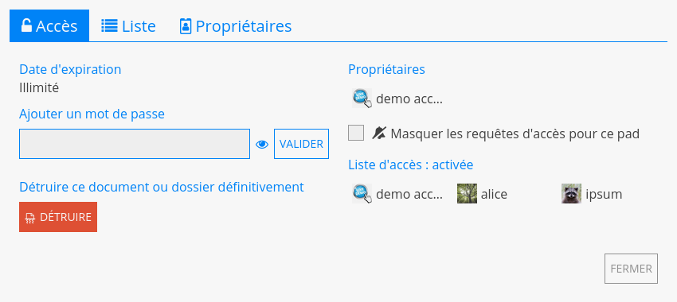
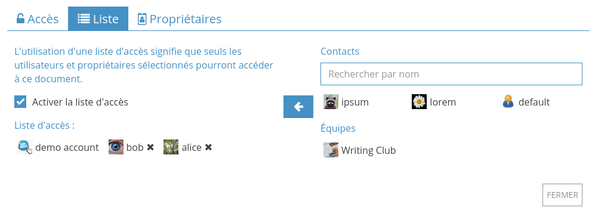

Partage / Accès¶
Partager et Accès sont les deux menus pour gérer comment les autres utilisateurs peuvent interagir avec vos documents sur CryptPad.
Depuis la barre d'outils d'un document : Partager et Accès au centre.
Depuis le CryptDrive :
Clic droitsur un document > Partager ou Accès.
Accès¶
Utilisateurs enregistrés
Ce menu permet de restreindre l'accès à un document ou dossier partagé :
Depuis le document : Accès dans la barre d'outils.
Depuis le CryptDrive :
Clic droitsur le document ou dossier partagé > Accès.
Onglet Accès¶
Cet onglet résume toutes les modalités d'accès au document :
Date d'expiration : Date de destruction du document. Cette date est réglée à la création du document et ne peut pas être modifié par la suite.
Mot de passe : Affiche si un mot de passe a été activé. Un nouveau mot de passe peut être activé, et un mot de passe existant peut être modifié.
Propriétaires : Liste de tous les owners du document.
- Demander les droits d'édition :Demander les droits d'édition : Pour les utilisateurs en lecture seule.Masquer les requêtes d'accès pour ce pad : Bloque les requêtes de droits d'édition. Propriétaires du document
Liste d'accès : Affiche la access list et indique si elle est activée.
Détruire : Supprimer le document de manière permanente.
Liste¶
Propriétaires du document
La liste d'accès permet de restreindre l'accès à un document. Une fois activée, les utilisateurs qui ne sont pas sur la liste n'ont pas accès au document, même si celui-ci est dans leur CryptDrive.
Pour activer la liste d'accès, cochez la case Activer la liste d'accès. Les propriétaires du document sont sur la liste par défaut et ne peuvent pas en être supprimés.
Pour ajouter d'autres utilisateurs ou équipes :
Les sélectionner dans la liste de contacts à droite du menu.
Les ajouter à la liste avec le bouton .
Pour supprimer un utilisateur ou une équipe de la liste d'accès, utiliser le bouton à côté de leur nom.
Propriétaires¶

Cet onglet est utilisé pour gérer les propriétaires du document. Les propriétaires ont les permissions suivantes :
Activer une liste d'accès.
Activer un mot de passe.
Ajouter ou supprimer d'autres propriétaires.
Détruire le document.
La propriété d'un document est établie lors de sa création.
Note
Si un document est créé sans propriétaire, personne n'a la permission de gérer sa propriété. Il ne peut pas être détruit de manière permanente, mais peut être supprimé du CryptDrive et est détruit automatiquement après 90 jours d'inactivité.
Propriétaires du document
Pour ajouter des propriétaires, utilisateurs ou équipes :
Les sélectionner dans la liste de contacts à droite du menu.
Les ajouter à la liste avec le bouton .
Pour supprimer un propriétaire, utiliser sur le bouton à côté de leur nom.